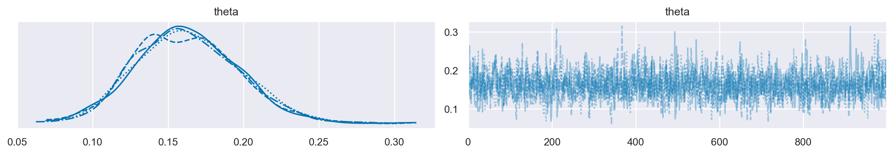
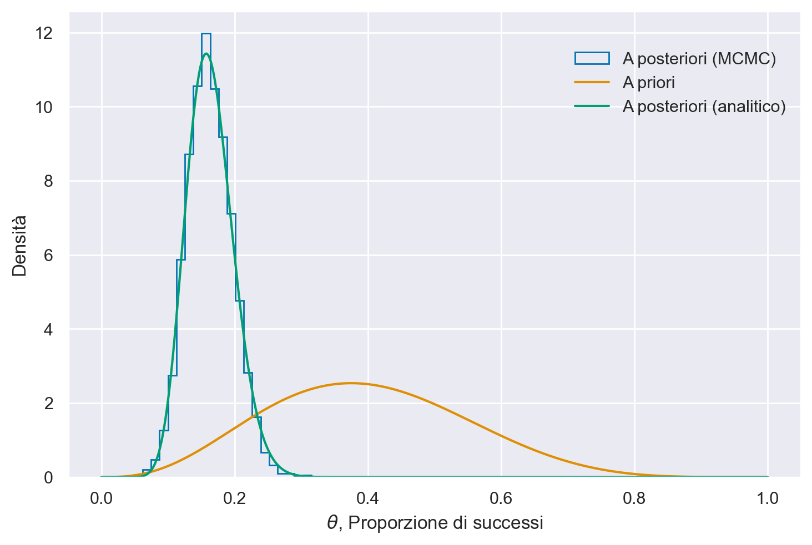

Installazione#
conda create -n stan_env -c conda-forge cmdstanpy
conda install -c conda-forge seaborn jupyter-book sphinx-exercise ghp-import arviz watermark -y
pip install sphinx-proof
import os
import numpy as np
import pandas as pd
import matplotlib.pyplot as plt
import seaborn as sns
import scipy.stats as stats
import arviz as az
import warnings
from cmdstanpy import cmdstan_path, CmdStanModel
/Users/corrado/opt/anaconda3/envs/stan_env/lib/python3.12/site-packages/tqdm/auto.py:21: TqdmWarning: IProgress not found. Please update jupyter and ipywidgets. See https://ipywidgets.readthedocs.io/en/stable/user_install.html
from .autonotebook import tqdm as notebook_tqdm
%config InlineBackend.figure_format = 'retina'
# Initialize random number generator
RANDOM_SEED = 8927
rng = np.random.default_rng(RANDOM_SEED)
az.style.use("arviz-darkgrid")
sns.set_theme(palette="colorblind")
stan_file = os.path.join('stan', 'bernoulli_model.stan')
with open(stan_file, 'r') as f:
print(f.read())
data {
int<lower=0> N;
array[N] int<lower=0, upper=1> y;
}
parameters {
real<lower=0, upper=1> theta;
}
model {
theta ~ beta(4, 6);
y ~ bernoulli(theta);
}
model = CmdStanModel(stan_file=stan_file)
print(model)
07:22:41 - cmdstanpy - INFO - compiling stan file /Users/corrado/_repositories/ds4p/chapter_4/stan/bernoulli_model.stan to exe file /Users/corrado/_repositories/ds4p/chapter_4/stan/bernoulli_model
07:22:56 - cmdstanpy - INFO - compiled model executable: /Users/corrado/_repositories/ds4p/chapter_4/stan/bernoulli_model
CmdStanModel: name=bernoulli_model
stan_file=/Users/corrado/_repositories/ds4p/chapter_4/stan/bernoulli_model.stan
exe_file=/Users/corrado/_repositories/ds4p/chapter_4/stan/bernoulli_model
compiler_options=stanc_options={}, cpp_options={}
y = np.zeros(100, dtype=int)
y[:14] = 1
data = {
"N" : 100,
"y" : y
}
print(data)
{'N': 100, 'y': array([1, 1, 1, 1, 1, 1, 1, 1, 1, 1, 1, 1, 1, 1, 0, 0, 0, 0, 0, 0, 0, 0,
0, 0, 0, 0, 0, 0, 0, 0, 0, 0, 0, 0, 0, 0, 0, 0, 0, 0, 0, 0, 0, 0,
0, 0, 0, 0, 0, 0, 0, 0, 0, 0, 0, 0, 0, 0, 0, 0, 0, 0, 0, 0, 0, 0,
0, 0, 0, 0, 0, 0, 0, 0, 0, 0, 0, 0, 0, 0, 0, 0, 0, 0, 0, 0, 0, 0,
0, 0, 0, 0, 0, 0, 0, 0, 0, 0, 0, 0])}
fit = model.sample(data=data)
07:22:57 - cmdstanpy - INFO - CmdStan start processing
chain 1 | | 00:00 Status
chain 2 | | 00:00 Status
chain 3 | | 00:00 Status
chain 4 | | 00:00 Status
chain 1 |█████████████████████████████████████████████████████████████████████████████████████████| 00:00 Sampling completed
chain 2 |█████████████████████████████████████████████████████████████████████████████████████████| 00:00 Sampling completed
chain 3 |█████████████████████████████████████████████████████████████████████████████████████████| 00:00 Sampling completed
chain 4 |█████████████████████████████████████████████████████████████████████████████████████████| 00:00 Sampling completed
07:22:57 - cmdstanpy - INFO - CmdStan done processing.
print(fit.summary())
Mean MCSE StdDev 5% 50% 95% N_Eff \
lp__ -49.508000 0.017726 0.718234 -50.87910 -49.247400 -49.023500 1641.74
theta 0.162594 0.000901 0.034142 0.10966 0.160991 0.219471 1434.73
N_Eff/s R_hat
lp__ 54724.7 0.99929
theta 47824.5 1.00083
_ = az.plot_trace(fit)

az.summary(fit, hdi_prob=0.94)
| mean | sd | hdi_3% | hdi_97% | mcse_mean | mcse_sd | ess_bulk | ess_tail | r_hat | |
|---|---|---|---|---|---|---|---|---|---|
| theta | 0.163 | 0.034 | 0.101 | 0.227 | 0.001 | 0.001 | 1415.0 | 1928.0 | 1.0 |
post = az.extract(fit)
post
<xarray.Dataset> Size: 128kB
Dimensions: (sample: 4000)
Coordinates:
* sample (sample) object 32kB MultiIndex
* chain (sample) int64 32kB 0 0 0 0 0 0 0 0 0 0 0 ... 3 3 3 3 3 3 3 3 3 3 3
* draw (sample) int64 32kB 0 1 2 3 4 5 6 7 ... 993 994 995 996 997 998 999
Data variables:
theta (sample) float64 32kB 0.1742 0.1354 0.1518 ... 0.2296 0.1695 0.2212
Attributes:
created_at: 2024-02-24T06:22:57.671593
arviz_version: 0.17.0
inference_library: cmdstanpy
inference_library_version: 1.2.1post["theta"].shape
(4000,)
alpha_prior = 4
beta_prior = 6
p_post = post["theta"]
# Posterior: Beta(alpha + y, beta + n - y)
alpha_post = alpha_prior + np.sum(data["y"])
beta_post = beta_prior + data["N"] - np.sum(data["y"])
plt.hist(
p_post,
bins=20,
histtype="step",
density=True,
label="A posteriori (MCMC)",
color="C0",
)
# Plot the analytic prior and posterior beta distributions
x = np.linspace(0, 1, 500)
plt.plot(
x, stats.beta.pdf(x, alpha_prior, beta_prior), label="A priori", color="C1"
)
plt.plot(
x,
stats.beta.pdf(x, alpha_post, beta_post),
label="A posteriori (analitico)",
color="C2",
)
# Update the graph labels
plt.legend(title=" ", loc="best")
plt.xlabel("$\\theta$, Proporzione di successi")
plt.ylabel("Densità")
Text(0, 0.5, 'Densità')
